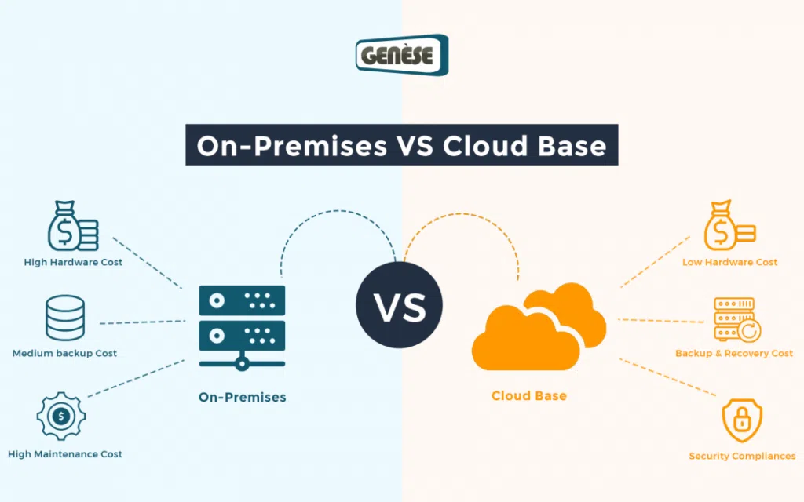
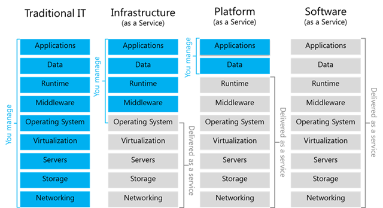
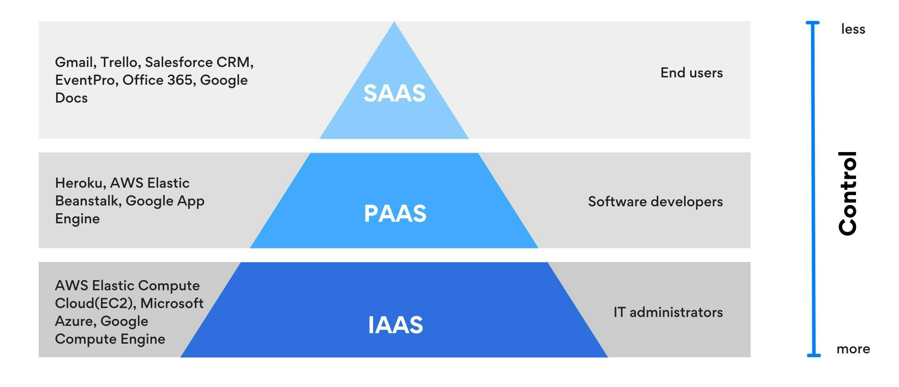
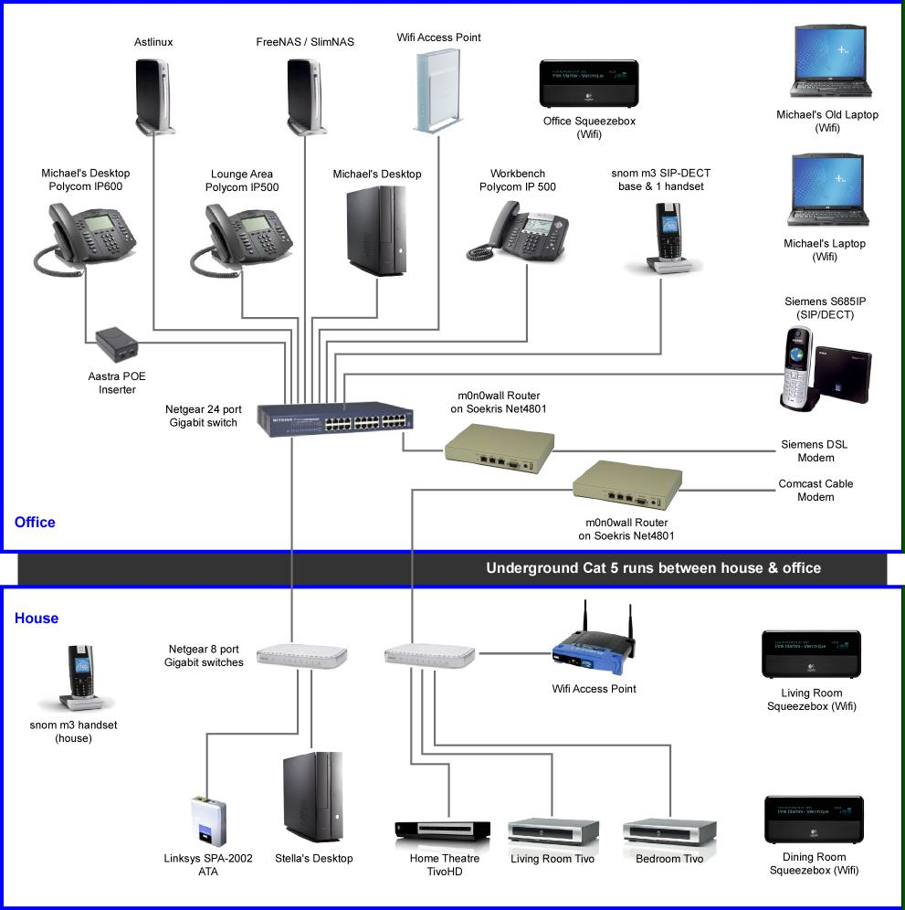
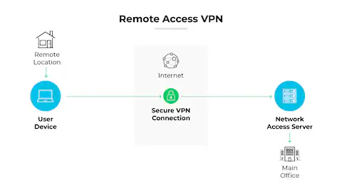

Cloud vs On-Premises Services
⭐ CCST GOLD LINE
On-Premises = Everything is in your office
Cloud = Everything is on the internet (provider’s data center)
On-Premises = Everything is in your office
Cloud = Everything is on the internet (provider’s data center)
🏢 What is On-Premises?
On-Premises means servers, storage, and software are installed inside your own building. You buy, manage, and maintain everything yourself.
🧠 Think of it as:
Owning your own generator instead of using electricity from the grid ⚡
Owning your own generator instead of using electricity from the grid ⚡
🧠 Examples
- Company server room
- College ERP hosted on campus
- Bank internal servers
On-Premises vs Cloud (Basic Idea)

✅ Advantages of On-Premises
- Full control over data
- Better for strict security rules
- Works without internet (local access)
- Custom hardware & software
- Very high initial cost
- Needs IT staff
- Maintenance & upgrades are your headache
- Not easily scalable
☁️ What is Cloud Computing?
Cloud computing means servers and software are hosted by a cloud provider and accessed over the internet. You pay only for what you use.
🧠 Think of it as:
Using electricity from the grid instead of owning a generator ⚡
Using electricity from the grid instead of owning a generator ⚡
🧠 Examples
- Gmail
- Google Drive
- AWS servers
- Azure virtual machines
✅ Advantages of Cloud
- Low initial cost
- No hardware management
- Easy scalability
- Access from anywhere
- Automatic updates
- Internet required
- Ongoing subscription cost
- Less control than on-prem
- Data security depends on provider
🧩 Cloud Deployment Models (VERY IMPORTANT)
🌍 1️⃣ Public Cloud
📌 Owned by third-party providers
🧠 Examples
🧠 Examples
- AWS
- Microsoft Azure
- Google Cloud
- Low cost
- Easy to use
- Highly scalable
- Less control
- Shared resources
🏢 2️⃣ Private Cloud
📌 Used by one organization only
🧠 Examples
🧠 Examples
- Bank cloud
- Government cloud
- High security
- Full control
- Expensive
- Needs management
🔀 3️⃣ Hybrid Cloud (MOST COMMON)
📌 Combination of Public + Private cloud
🧠 Example
🧠 Example
- Sensitive data → Private cloud
- Website & apps → Public cloud
- Best of both worlds
- Flexible & secure
- Complex setup
🧱 Cloud Service Models (SaaS, PaaS, IaaS)
🧠 Easy Memory Trick
IaaS = Infrastructure
PaaS = Platform
SaaS = Software
IaaS = Infrastructure
PaaS = Platform
SaaS = Software
IaaS vs PaaS vs SaaS (Comparison)

🧰 IaaS – Infrastructure as a Service
You manage:
- OS
- Applications
- Server
- Storage
- Network
- AWS EC2
- Azure VM
🧑💻 PaaS – Platform as a Service
You manage:
- Applications only
- OS
- Runtime
- Servers
- Google App Engine
- Heroku
Control Responsibility in IaaS, PaaS & SaaS

🧑🎓 SaaS – Software as a Service
Provider manages everything.
You just use the software.
🧠 Examples
You just use the software.
🧠 Examples
- Gmail
- Zoom
- Google Docs
🧩 Cloud vs On-Premises (Side-by-Side)
| Feature | On-Premises | Cloud |
|---|---|---|
| Setup cost | High | Low |
| Maintenance | Your responsibility | Provider |
| Scalability | Difficult | Easy |
| Internet needed | ❌ No | ✅ Yes |
| Control | Full | Limited |
| Accessibility | Local | Anywhere |
🛠️ CCST Troubleshooting Scenarios
| Situation | Best Choice |
|---|---|
| Small startup | Public Cloud |
| Bank data | Private Cloud |
| Mixed workloads | Hybrid Cloud |
| No internet area | On-Premises |
Remote Work vs Hybrid Work
⭐ CCST GOLD LINE
Remote Work = Work from anywhere
Hybrid Work = Office + Remote (mix)
Networking makes both possible 🌐
Remote Work = Work from anywhere
Hybrid Work = Office + Remote (mix)
Networking makes both possible 🌐
🧠 What is Remote Work?
Remote work means an employee works outside the office and uses the internet and company network to do the job.
🧠 Think of it as:
Office in your home / café / anywhere 🏠☕
Office in your home / café / anywhere 🏠☕
🧠 Examples
- Software developer working from home
- Support engineer logging in from another city
- Trainer teaching online
Home Office Network Setup

🌐 Networking Needed for Remote Work
- Stable internet connection
- VPN (secure access to company network)
- Cloud services (email, storage, apps)
- Video conferencing tools
✅ Advantages of Remote Work
- Work from anywhere
- No travel time
- Flexible schedule
- Reduced office cost
- Depends fully on internet
- Security risks (public Wi-Fi)
- Less team interaction
- Troubleshooting is harder
🏢 What is Hybrid Work?
Hybrid work means employees work partly from the office and partly from home.
🧠 Think of it as:
3 days office + 2 days home 🗓️
3 days office + 2 days home 🗓️
🧠 Examples
- Monday–Wednesday: Office
- Thursday–Friday: Home
- Used by IT companies, MNCs, startups
🌐 Networking Needed for Hybrid Work
- Office LAN / WLAN
- Home internet
- VPN for remote days
- Cloud apps for collaboration
✅ Advantages of Hybrid Work
- Balance between office & home
- Better collaboration than full remote
- Flexibility
- Less office crowd
- Network complexity
- Need secure access everywhere
- Managing users is harder
🔐 Role of VPN (Very Important for CCST)
A VPN (Virtual Private Network) creates a secure tunnel between an employee and the company network.
🧠 Example:
Employee at home → VPN → Office server
📌 Protects data from hackers
Employee at home → VPN → Office server
📌 Protects data from hackers
Remote Access using VPN

☁️ Role of Cloud in Remote & Hybrid Work
Cloud helps by providing:
- Email (Gmail, Outlook)
- File sharing (Drive, OneDrive)
- Apps (HRMS, ERP)
- Collaboration tools (Zoom, Teams)
🧩 Remote Work vs Hybrid Work (Side-by-Side)
| Feature | Remote Work | Hybrid Work |
|---|---|---|
| Work location | Anywhere | Office + Home |
| Office presence | ❌ No | ✅ Yes (partial) |
| Network type | Internet + VPN | LAN + WAN + VPN |
| Flexibility | High | Medium–High |
| Security needs | Very High | High |